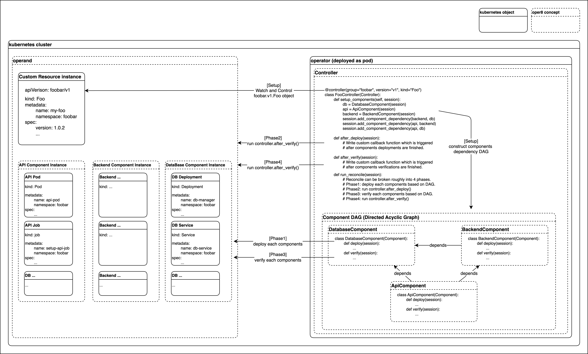

Architecture
The oper8 architecture is focused on allowing users to implement exactly what their operator needs while making the operator logic "just work" behind the scenes.
Definitions
-
watch: Thewatchoperation is the binding of specific event handling logic to agroup/version/kind. -
reconciliation: The event handling in theoperatorpattern is referred to as areconciliation. This is because the primary job of anoperatoris to reconcile the current state of the cluster against the desired state declared in the Custom Resource instance (CR). -
apply: In order to manage dependent resources, anoperatorneeds to make changes in the cluster. Theapplyoperation takes an in-memory representation of an object and applies that change to the cluster. -
get: Anoperatoroften needs to fetch the current state of a resource from the cluster. Thegetoperation fetches this state at the current time. -
disable: Depending on configuration values, anoperatormay need to ensure that a given resource does not exist in the cluster. Thedisablechecks for a resource and deletes it if found. -
verify: In order to understand the state of a given CR instance, anoperatormust be able to verify the current state of its managed resources. Inoper8, this is done with type-specific logic for most standard kubernetes objects, and simply by checking for the object's presence for all other types.
Abstractions
Session
A Session contains the state of the current reconciliation (1 Session == 1 reconciliation). A Session is shared across all related objects which associate with the same reconciliation. For instance, users can implement a controller method which get some component status, and then use that information to modify other component by leveraging a session. Session also serves as a gateway to use DeployManager which get or set objects inside of the k8s cluster.
DeployManager
DeployManager module implements an abstraction around apply, get and disable operations (Similar to kubectl apply). It is accessible via Session in all user implementation.
WatchManager
A WatchManager module implements an abstract interface for regstering Controllers as reconciliation event listeners via watch operation. In general, users do not need to interact with this abstraction outside of invoking oper8 as a __main__ module with --dry_run.
Component
A Component is an atomic grouping of raw kubernetes resources that serves a single purpose. For instance, a standard microservice will consist of a Deployment, a Secret and a Service. These would all be grouped into a single Component as creating any of them in isolation would not make sense.
Controller
A Controller is the core object type that manges the mapping from a CR instance to the set of Component. A Controller is bound to exactly one CR by specifying group/version/kind, and define associated Component(s). A Controller performs reconciliation when the corresponding watch event is triggered.
Reconciliation overview

The reconcile entry point is Controller.run_reconcile() which then triggers the following steps in high level:
- [Setup] Construct The Session: Set up the immutable
Sessionobject that will be passed through the rest of the rollout - [Setup] Construct the session dependency DAG (Directed acyclic graph) based on components dependencies: User defined components described in
Controller.setup_components()andSession.add_component_dependency()are in the end converted into DAG so thatoper8can deploy them from upstream components. - [Phase1] Run the
Component.deploy()in DAG: In dependency order, invokedeployon eachComponent, halting if anyComponentterminates with an unsuccessful state. This may be caused by an expected error (prerequisite resource not found in the cluster), or an unexpected error (unstable cluster). - [Phase2] Run user defined
Controller.after_deploy()orController.after_deploy_unsuccessful(): User-definedControllersmay define custom logic to run after thedeployDAG has completed successfully, but before theverifyDAG runs. Note this is not one component level likeComponent.deploy(). This runs after all components deployments are finished. - [Phase3] Run the
Component.verify()in DAG: The deployed components fromPhase2are verified per component in accordance with the dependency order of the DAG. User can customize verification logic for each component using theComponent.verify()function. - [Phase4] Run user defined
Controller.after_verify()orController.after_verify_unsuccessful(): User-definedControllersmay define custom logic to run after all components verify DAG is completed. This is primarily useful for custom readiness checks that requires the entire application to be ready.
Typical Development Flow
In short, a typical development flow with oper8 are the following:
First, conceptualize your CR and related k8s resources into oper8 abstractions.
- What is your main CR?
- What k8s resources your CR needs? How they can be grouped as
Component? - What are the dependency relationships between each
components? - What kind of reconciliation logic you need for the CR?
Then, implement your application with oper8.
Typically, user defines Components and a Controller for the target CR. Then use the session with component or controller to get/set k8s objects in the cluster and use it to customize reconciliation logic.
The user rarely need to modify WatchManager or DeployManager.